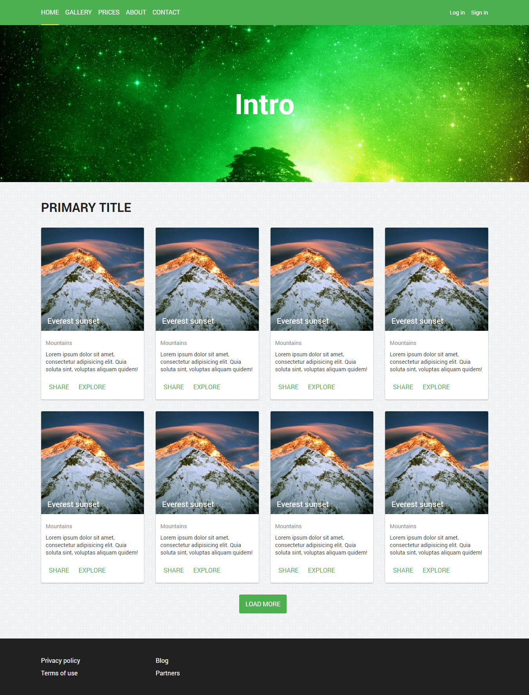

Web page

- Нужно повторить то что на картинке
- Нельзя использовать таблицы
- Сетку сделать с помощью float. Важный момент: сетка должна быть повторно использована в footer. То есть одна сетка как для карточек так и для меню в футере.
- За основу взять homework.css, стили писать после Your styles go below. Не изученные свойтва под комментарием Unknown props
- Раздел Intro - фон должен позиционироваться относительно страницы (параллакс эффект)
- Основная рабочая область 1170px с отступами внутри по 15px. Соответственно от этого должна зависеть сетка. Эта рабочая область сохраняется в шапке и футере.
- Все элементы должны иметь классы, давать им адекватные названия
- Фото карточки это фон
- Цветовую гамму можно свою.
- Обратите внимание на фон body.
- Активный пункт меню в шапке подчеркнут.
- Не забываем про box-sizing.
- Все материалы в папке public/views/css/lesson-4
- HTML скуртуру использовать из lesson-2